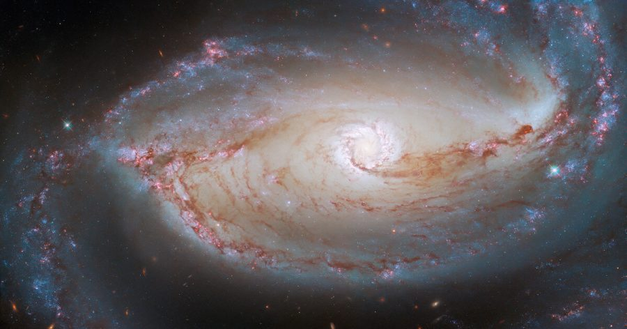

ဟတ်ဘယ် တယ်လီစကုပ် (Hubble Space Telescope) ကြီးကနေ ရိုက်ကူးထားတဲ့ မျက်လုံးပုံ သဏ္ဍာန် ရှိတဲ့ ဂလက်ဆီကြီး တစ်စင်းရဲ့ ဓါတ်ပုံကို နာဆာက ထုတ်ပြန် လိုက်ပါတယ်။
NGC 1097 လို့ အမည်ပေး ထားတဲ့ ဒီ ဂလက်ဆီ ကြီးဟာ ကမ္ဘာကနေ အလင်းနှစ် ၄၈ သန်း အကွာမှာ ရှိပါတယ်။ ဆိုလိုတာက ဒီ ဂလက်ဆီ ကနေ လာတဲ့ အလင်းဟာ ကမ္ဘာကို ရောက်ဖို့ဆို နှစ်ပေါင်း ၄၈ သန်းတောင် ကြာမှာ ဖြစ်ပါတယ်။
အခု ဓါတ်ပုံ ရဖို့ ဟတ်ဘယ်လ် တယ်လီစကုပ် ကြီးက သာမန် ကင်မရာနဲ့ ရိုက်ကူးထား တာတော့ မဟုတ်ပါဘူး။ ဒီ ပုံရဖို့ကို အထူး ကင်မရာ နှစ်လုံးကို အသုံးပြု ပြီး ရိုက်ကူးထားတာ ဖြစ်ပါတယ်။ ဒီ အထူး ကင်မရာ နှစ်လုံး ကနေ ရိုက်ကူးထားတဲ့ ပုံတွေကိုမှ ပြန်ပြီး ပေါင်းစပ်ပုံဖော် ထားတာ ဖြစ်ပါတယ်။
ဒီ ဂလက်ဆီ ကြီးရဲ့ ဗဟိုမှာ မဟာ ဧရာမ တွင်းနက် (Supermassive black hole) ကြီး တစ်စင်း ရှိနေပါတယ်။ ဒီတွင်းနက်ကြီးရဲ့ ဒြပ်ထု ပမာဏဟာ ကျွန်တော်တို့ နေ အစင်းပေါင်း သန်း ၁၄၀ ရဲ့ ဒြပ်ထုနဲ့ ညီမျှပါတယ်။
ဆက်စပ်ဆောင်းပါး – စကြာဝဠာထဲက အလှဆုံး ဂလက်ဆီများ
ဒီ မဟာတွင်းနက်ကြီးရဲ့ ပတ်ခြာလည် မှာတော့ ကြယ် အသစ်တွေ မွေးဖွားရာ ရပ်ဝန်း တစ်ခု ရှိနေပါတယ်။ ဒီ ရပ်ဝန်းကြောင့် ဗဟို နေရာဟာ မျက်စေ့ တစ်လုံးရဲ့ မျက်ဆံလိုပဲ လင်းထိန်နေတာ ဖြစ်ပါတယ်။
အခု ပုံကို ဟတ်ဘယ်က Wide Field Camera 3 (WFC3) နဲ့ Advanced Camera for Surveys (ACS) ဆိုတဲ့ အထူး ကင်မရာ နှစ်လုံးနဲ့ ရိုက်ကူး ခဲ့တာ ဖြစ်ပါတယ်။ ကင်မရာ တစ်လုံးစီမှာ ဓါတ်ပုံ အထူးမှန် (photo filter) ၇ မျိုးစီ အသုံးပြု ထားပါတယ်။
ဒီ အထူးမှန် တွေက ကင်မရာထဲ ဝင်တဲ့ အလင်း တစ်ရောင်ခြင်း စီကို ပိုမို တောက်ပ လာအောင် ပြုလုပ် ပေးတာပါ။ ဒီ filter တစ်ခုချင်းစီ ခံပြီး တစ်ပုံချင်းစီ ရိုက်ကူး ရပါတယ်။ ပြီးတော့မှ ဒီ ဓါတ်ပုံတွေ အားလုံးကို ပြန်ပြီး ပေါင်းစပ်ယူတာ ဖြစ်ပါတယ်။
ဒီလို filter အမျိုးမျိုး အသုံးပြုပြီး ဓါတ်ပုံ အများအပြား ရိုက်ကူးကာ ပြန်လည်ပေါင်းစပ် ခြင်းအားဖြင့် အရောင် တောက်ပ စိုပြေ လာရုံတင် မကဘူး ရရှိလာတဲ့ ဓါတ်ပုံကလဲ ပိုမို ကြည်လင် ပြတ်သားပါတယ်။
ဒါ့အပြင့် အနီအောက်ရောင်ခြည် အပါအဝင် မတူညီတဲ့ လှိုင်းအလျား အမျိုးမျိုးကိုလဲ ဓါတ်ပုံမှာ ပုံပေါ်အောင် ရိုက်ကူး နိုင်တာမို့ သာမန် လူ့မျက်စေ့နဲ့ မမြင်နိုင်တဲ့ အသေးစိတ် အချက်အလက် တွေကိုလဲ ဓါတ်ပုံမှာ မှတ်တမ်း တင်နိုင်တယ်လို့ ဆိုပါတယ်။
High resolution မူရင်းပုံကို ဒီလင့်ကနေ ဒေါင်းနိုင်ပါတယ် (File size – 16 MB) – ဓါတ်ပုံမူရင်းဒေါင်းရန်
Reference: Snapshot: Hubble stares back at an eye-shaped galaxy | Astronomy
မျက်လုံးပုံ ဂလက်ဆီကြီး

{kind=link}
April 25, 2022
Other Posts
- ရှေးအီဂျစ် နတ်ဘုရားကျောင်းအောက် ဥမင်လှိုဏ်ခေါင်းကြီး တစ်ခု ရှာတွေ့
- ကမ္ဘာလည်တာ ရပ်သွားခဲ့ရင်
- ငှက်ပျောခွံမှ ဟိုက်ဒြိုဂျင် လောင်စာထုတ်နည်းသစ်
- ကမ္ဘာ့ရေချိုကန်များ အလျှင်အမြန် ခမ်းခြောက်လာနေ
- ဥက္ကာပျံတွေကို အဏုမြူဗုံးနဲ့ လမ်းလွှဲမယ်
- ကားတာယာနဲ့ ပါတ်သက်ပြီး သိသင့်သမျှ
- ကမ္ဘာပေါ်မှာ အသက်ဇီဝ ဘယ်လို စဖြစ်လာလဲ
- ကြယ်တစ်စင်းဟာ ဂြိုဟ်အဖြစ် ပြောင်းသွားနိုင် သလား
- နှစ် ၂၀၀,၀၀၀ ကျော်က ကလေးခြေရာ လက်ရာများ တိဘက်တွင် ရှာတွေ့
- အဏုမြူ စွမ်းအင်သုံး ဒုံးအင်ဂျင် နာဆာစမ်းသပ်မည်